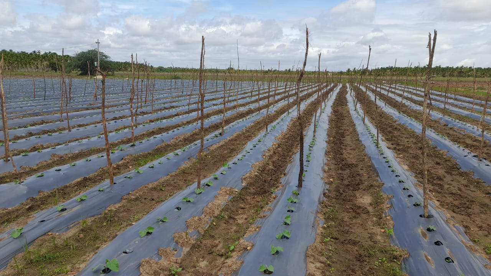

Our Story
Farm-integrated processing built for reliability and traceability
We aggregate quality produce, support farmers with inputs and training, and operate a certified facility for export-grade processing.
Mission
To build a transparent farm-to-export supply chain that benefits farmers and delivers reliable products to international partners.
How we operate
- Field training and input support
- On-field QA and harvest scheduling
- FSSC-certified processing and documentation
Milestones
2020 founded · 2022 FSSC 22000 · 2024 STAR-K Kosher audit
Certifications
Official audits and certificates supporting our exports. Click a certificate to enlarge.

STAR-K Kosher

FSSC 22000